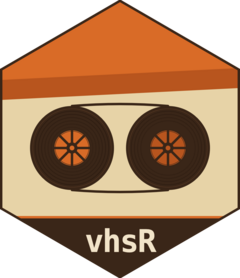

Locate the per-user vhsR binary cache
vhsr_cache_dir.RdThe directory under tools::R_user_dir() where vhsr_install() places
downloaded vhs, ttyd, and ffmpeg binaries. The path is
platform-and-architecture-specific so a single $HOME can serve multiple
machines (e.g. via NFS).